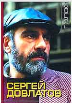

Sergei Dovlatov
Russians in America: The Third Wave

Sergei Dovlatov
1941 - 1990
Perhaps more than any other writer, Dovlatov belongs to and represents the Third Wave in America. His publishing career, as opposed to his journalistic beginnings, really begins and ends in New York. His name is inseparably connected with the newspaper, The New American (Новый американец) which he edited, and whose commentaries Колонки редактора have been gathered and published. Dovlatov was at the center of Russian émigré intellectual life and strife. He also gained recognition by publishing in such prestigious magazines as The New Yorker, providing an aura that been reserved for Vladimir Nabokov.
A good starting place for Dovlatov is Wikipedia, but there is much more.
An unofficial web page in Russian
Radio Liberty did a nineteen program series of memories about him. Listen here.
One of the more interesting books about Dovlatov is А. Ю. Арьев, Малоизвестный Довлатов (SPb: 1996).
The book is particularly useful for its insighs into The New American, from the politics to its readers. The ultimate irony is that such books are now routinely published in runs of 100,000 to 150, 000 copies, a far cry from the hundreds of copies of his books with American publishers.
Dovlatov's memory is carefully preserved by his wife Elena and their daughter, Katya who has established the Dovlatov Foundation in Moscow. Contact: k.dovlatov@dovlatov.com
Who, What, Where and When?
Internet Links
Другие Ссылки